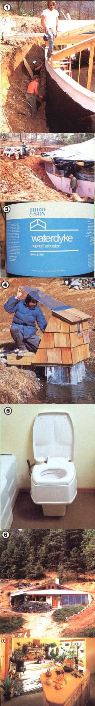
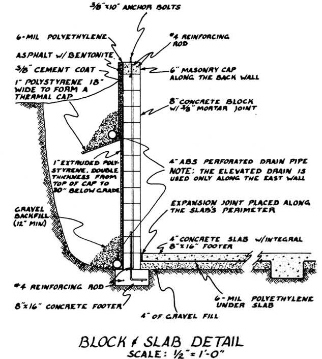

Is is possible to achieve food and energy independence on one acre? Well, with imagination,hard work, and the right one acre, we think it can be done . . .and that's what this project is all about. Of course, providing most of the basic needs for four people from such a small piece of ground is a tall order. Still, we think it's a goal worth pursuing, and we're hoping that in this series of articles about our low-cost homestead we'll be able to help some of you in your struggles to increase your self-reliance . . . by doing some of the experimenting for you.
In previous installments, we discussed both our plans for the project and the construction of the building's shell. This time around, we'll gooney the important tasks of waterproofing and insulation, and also describe a couple of the home's special energy-saving details.
Effective waterproofing is crucial to the longevity of any earth-sheltered building, and leakage problems have traditionally been the major complaint voiced by owners of such structures. Fortunately, there are numerous quality waterproofing systems on the market today, two of which we used successfully in our last earth-sheltered building construction project (see "My MOTHER's House", issues 70, 71, 72, 73, 75, 76, 77, and 80).
Of course, good commercial waterproofing systems are expensive . . . but, in general, they're probably the wisest expenditure you can make when building an underground home. However, for our ultra-low-cost earth shelter, we decided to take a risky but very inexpensive approach. As an experiment, we chose to use two applications of an asphalt-bentonite compound in conjunction with a layer of 6-mil polyethylene. The total cost of the adhesive and the plastic was less than 15 cents per square foot of wall . . . as opposed to the $1.00 per square foot (or more) price tag on proven commercial systems.
We probably won't know whether this gamble was completely successful for years to come. So far, at least, the building's walls haven't leaked. Over the years, however, the asphalt could gradually dissolve in the water around the walls. In the meantime, we do not recommend that you follow our lead with this system. We can afford to risk having to pull out the backfill and install another waterproofing material . . .and this experiment is one way we can serve you, our readers. But we doubt that most folks would be willing to gamble with us. (Up dates on the system's performance will appear in future issues of this magazine.)
Then again, we did give our experimental waterproofing setup the best backup possible, by installing a thorough drainage system around the walls. A perforated, 4" ABS pipe runs all the way around the junction of the footing and foundation, lying in a 12" bed of gravel. This pipe helps channel water away from the crucial joint between the concrete footing and the block foundation. Another 4" ABS pipe is set four feet above the footing on the fully bermed eastern portion of the wall. This pipe is also positioned in a bed of gravel to prevent it from becoming clogged with mud.
PULL UP THE COVERS
The exterior insulation for the building is extruded, skinned polystyrene foam. Two 1" "pieces extend down three feet below grade. At that point, the inner layer continues down to (and overlaps) the footing. The outer 1" piece, however, is cut at the three-foot line and flared out at about a 60° angle from vertical. This leaves a one-foot-long skirt around the building to close off a direct path for heat to travel from the footing and wall to the surface. (In addition, the impermeable material helps route water away from the walls of the building.)
Our roof insulation consists of one layer of unfaced 3-1/2 "fiberglass that's been pushed up between the rafters, with another layer of faced 3-1/2" fiberglass placed beneath the first and stapled to the beams themselves. No further vapor barrier was deemed necessary for our climate, but those of you who are building in areas with 5°F or lower design temperatures should seriously consider using a polyethylene layer to protect the insulation from condensation. Furthermore, a well-sealed vapor barrier would cut down heat loss caused by infiltration.
SPLISH SPLASH
Finishing the interior and connecting all the services of a home are areas where a huge part of the construction budget can be eaten up. Anyone who's shopped for cabinets, lights, or cast-iron plumbing fixtures will attest to that. Therefore, we devoted a great deal of attention to finding recycled components wherever possible and searching out low-cost solutions when scrounging proved impossible.
Our building's cast-iron bathtub, for example, was purchased at a salvage yard for $30. This was a significant saving over the $300-$400 we would have been forced to pay for a comparable new one. The tub's porcelain surface is in fine shape, and the design is only slightly dated ...that's something we can easily tolerate in order to save three hundred bucks! Similarly, we got two sinks-one in white porcelain for the bathroom and one in stainless steel for the kitchen-for a total of another $30. When it came to the commode, however, we found far fewer acceptable options.
You see, we were determined to install a watersaving toilet-one that would use far less than do the current crop of "3-1/2 gallon per flush" so-called watersavers-but we knew we'd be unlikely to find such an item at our local salvage yard. Furthermore, commercial composting toilets proved to be prohibitively expensive, and all the homemade designs that our health inspector would approve required at least a crawl space to accept their bulk. Worse still, most "less than one gallon per flush" toilets we checked into required an auxiliary source of compressed air and/or were-again-too dung costly. Luck was with us, though, and we got a phone call from some folks in Vermont who build a low-volume flush toilet called the Seiche One. At leas than one gallon per use-and with a retail price of $199-it was the answer we' d been looking for!
The Seiche One sports two major water-conservation features: Its flush valve is progressive, allowing the user to determine exactly how much water is needed for effective cleansing . . . and the S-trap, which holds (and wastes) a significant amount of H 2 O in the conventional commode, is replaced by a closed-cell foam flapper valve. As a result of these changes, the average Seiche One flush requires only one quart of water, according to the water closet's manufacturer, Patrick Creek Corporation (Dept. TMEN, P.O. Box 135, Hinesburg, Vermont 05461).
Installing the ABS plastic unit is actually somewhat easier than putting in a conventional vitreous china commode, since the assembly is considerably lighter. According to the company, the Seiche One has been in production in various forms for 25 years, and for more than 10 in the current plastic configuration, with virtually no warranty returns. As we put some "miles" on the conservative flusher, we'll be able to judge its longevity for ourselves, and report our findings to you.
ELECTRICAL
As we suggested back in the first article of this series, we designed our building with 12-volt electrical service in mind. This rating-as opposed to the conventional 120-volt setup-is compatible with a wide range of alternative-energy systems and will allow us to use appliances created for the diverse recreational-vehicle market. What's more, though 12-volt wiring can handle 120 volts, the reverse isn't necessarily true . .. so deciding to switch to low voltage-which could entail major rewiring- after a house is finished could be an expensive and frustrating mistake.
We used 12-gauge copper wire for all the standard service laterals in the building, but we put no more than a pair of receptacles on any one circuit. In some cases, though, two such receptacles and a light fixture are served by the same wire, since most lights require only minimal power. Interestingly enough, this arrangement was more than adequate to satisfy our building inspector . . . though he did require that we add both a 230-volt receptacle for a dryer and a weatherproof outside receptacle.
A TRICKLE FROM A TRICKLE
One of the limitations imposed by a 12-volt electrical system is that the source of electricity must be close to the point of use. Because greater amperage is required at low voltage to suit the same power demand met with 120 volts, line losses can quickly become a serious problem. We're fortunate, then, to have a stream running no more than 30 feet from our house's back door, so-by placing a mini-hydroelectric station on a diversion pipe feeding into one of our ponds-we were able to get the generator within 15 feet of the back door.
The power generation system consists of a 4-1/2" pelton wheel driving a converted automobile alternator . . . and was built by Don Harris (Dept. TMEN, 632 Swanton Road, Davenport, California 95017). We're using about 20 gallons of water per minute (which is roughly 2/3 of the mean flow rate for the stream), with a total drop of 36 feet, to produce just short of 40 watts. Though this is a comparatively small amount of electricity, it is sustainable for 24 hours per day through roughly 3/4 of the year. Thus, during that operating period, it produces a little less than a kilowatt-hour per day . . . or the equivalent, in our area, of the output from six 35-watt photovoltaic panels.
This amount of power should be adequate for lighting, intermittent use of small appliances, and even a modest amount of water heating. During periods when we need more juice than the system can produce, the deficit will be made up by a 5,000-watt Honda generator that's located in a shed off the chicken coop/greenhouse. Though the device does, of course, burn fossil fuel, its great power output (as compared to our hydro system) means that it should seldom have to be run for long . . . and the water-cooled, two-cylinder engine is both fuel-efficient and quiet. What's more, plans are in the works now to scavenge waste heat from the motor-generator's cooling system to help keep our fowl and rabbits cozy in winter.
Any illusions we may have had about boosting the output from the hydro system were laid aside when we discovered just how low our fall of water actually is. We'd anticipated having as much as 70 feet of head-in fact, that's the pressure Harris Hydro planned on when it put together the system-so the 36 feet that we ended up with was a serious comedown. Don's instructions suggested that the system we were using should achieve about 40% efficiency if the fall were greater than 70 feet. (Harris also makes a unit with a permanent magnet alternator that achieves higher overall efficiency.) Pelton wheels are designed to use high heads, and they're never specified for use at lower than 50 feet. At our site, then, the Harris Hydro system is out of its element . . . but working amazingly well despite all odds!
The power from the turbine generator charges a bank of six series-wired 2-volt batteries, each of which has a capacity of 790 amp-hours. The huge, single-cell Exide units are from the same batch that we used in conjunction with our windplant (see MOTHER NO. 69, page 180, and the update on page 151 of this issue for more about that alternative-energy system). The 3-amp continuous (albeit trickle) charge that the plant produces should be enough to keep the recycled telephone substation batteries "warm", but it's unlikely that the small amount of juice will ever overcharge the cells. Nonetheless, to allow for future expansion of the generating setup, we've wired a Solar Works Charge-A-Stat into the system. Paul Wilkins's device is acknowledged to be one of the best charge controllers going, and at $90 it provides inexpensive insurance for our battery bank.
As these words are being typed, our carpenters are putting the finishing touches on the Low-Cost Earth-Sheltered Home. Soon one of our staff members will be moving in for the remainder of the winter, to get an idea of just what it's like to live in the house. In the May/ June issue, then, we'll be able to tell you about the fine interior details of our cozy little abode (including a preview of some beautiful cabinets that we'll be telling you how to make and how-to information about our thermal shutters). In the future, we'll be able to relate the joys (or possibly the miseries) that are associated with actually living in a less-than-$10-per-squarefoot home!
|
 STAFF PHOTO |
 |
|